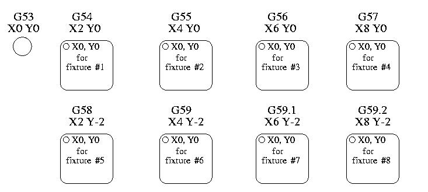

Coordinate Systems
Introduction
This chapter introduces you to offsets as they are used by the LinuxCNC.
These include:
Machine Coordinates (G53)
Nine Coordinate System Offsets (G54-G59.3)
Global Offsets (G92) and Local Offsets (G52)
Machine Coordinate System
When LinuxCNC is started the postions of each axis is the machine origin. Once an axis homed the the machine orgin for that axis is set to the homed position. The machine origin is the machine coordinate system which all other coordinate systems are based. The G53 G code can be used to move in the machine coordinate system.
Coordinate Systems

Figure 1. Example of Coordinate Systems
Coordinate System Offsets
G54 - use coordinate system 1
G55 - use coordinate system 2
G56 - use coordinate system 3
G57 - use coordinate system 4
G58 - use coordinate system 5
G59 - use coordinate system 6
G59.1 - use coordinate system 7
G59.2 - use coordinate system 8
G59.3 - use coordinate system 9
Coordinate system offsets are used to shift the coordinate system from the machine coordinate system. This allows the G code to be programmed for the part without regard to the part location on the machine. Using coordinate system offsets would allow you to machine parts in multiple locations with the same G code.
The values for offsets are stored in the VAR file that is requested by the INI file during the startup of an LinuxCNC.
In the VAR file scheme, the first variable number stores the X offset, the second the Y offset and so on for all nine axes. There are numbered sets like this for each of the coordinate system offsets.
Each of the graphical interfaces has a way to set values for these offsets. You can also set these values by editing the VAR file itself and then restart LinuxCNC so that the LinuxCNC reads the new values however this is not the recommended way. Using G10, G52, G92, G28.1, etc are better ways to set the variables.
Axis |
Variable |
Value |
|---|---|---|
X |
5241 |
2.000000 |
Y |
5242 |
1.000000 |
Z |
5243 |
-2.000000 |
A |
5244 |
0.000000 |
B |
5245 |
0.000000 |
C |
5246 |
0.000000 |
U |
5247 |
0.000000 |
V |
5248 |
0.000000 |
W |
5249 |
0.000000 |
You should read this as moving the zero positions of G55 to X = 2 units, Y= 1 unit, and Z = -2 units away from the absolute zero position.
Once there are values assigned, a call to G55 in a program block would shift the zero reference by the values stored. The following line would then move each axis to the new zero position. Unlike G53, G54 through G59.3 are modal commands. They will act on all blocks of code after one of them has been set. The program that might be run using fixture offsets would require only a single coordinate reference for each of the locations and all of the work to be done there. The following code is offered as an example of making a square using the G55 offsets that we set above.
G55 ; use coordinate system 2
G0 X0 Y0 Z0
G1 F2 Z-0.2000
X1
Y1
X0
Y0
G0 Z0
G54 ; use coordinate system 1
G0 X0 Y0 Z0
M2
In this example the G54 near the end leaves the G54 coordinate system with all zero offsets so that there is a modal code for the absolute machine based axis positions. This program assumes that we have done that and use the ending command as a command to machine zero. It would have been possible to use G53 and arrive at the same place but that command would not have been modal and any commands issued after it would have returned to using the G55 offsets because that coordinate system would still be in effect.
Default Coordinate System
One other variable in the VAR file becomes important when we think about offset systems. This variable is named 5220. In the default files its value is set to 1.00000. This means that when the LinuxCNC starts up it should use the first coordinate system as its default. If you set this to 9.00000 it would use the ninth offset system as its default for start up and reset. Any value other than an integer (decimal really) between 1 and 9, or a missing 5220 variable will cause the LinuxCNC to revert to the default value of 1.00000 on start up.
Setting Coordinate System Offsets
The G10 L2x command can be used to set coordinate system offsets:
Local and Global Offsets
The G52 command
'G52' is used in a part program as a temporary "local coordinate system offset" within the workpiece coordinate system. An example use case is when machining several identical features at different locations on a part. For each feature, 'G52' programs a local reference point within workpiece coordinates, and a subprogram is called to machine the feature relative to that point.
'G52' axis offsets are programmed relative to workpiece coordinate offsets 'G54' through 'G59.3'. As a local offset, 'G52' is applied after the workpiece offset, including rotation. Thus, a part feature will be machined identically on each part regardless of the part’s orientation on the pallet.
Programming 'G52 X1 Y2' offsets the current workpiece coordinate system X axis by 1 and Y axis by 2. Accordingly, on the DRO, the current tool position’s X and Y coordinates will be reduced by 1 and 2, respectively. Axes unset in the command, such as Z in the previous example, will be unaffected: any previous 'G52' Z offset will remain in effect, and otherwise the Z offset will be zero.
The temporary local offset may be canceled with 'G52 X0 Y0'. Any axes not explicitly zeroed will retain the previous offset.
'G52' shares the same offset registers as 'G92', and thus 'G52' is visible on the DRO and preview labeled with 'G92'.
The G92 commands
'G92' is typically used in two conceptually different ways: as a "global coordinate system offset" or as a "local coordinate system offset". The 'G92' set of commands includes:
'G92' - This command, when used with axis names, sets values to offset variables.
'G92.1' - This command sets zero values to the G92 variables.
'G92.2' - This command suspends but does not zero out the G92 variables.
'G92.3' - This command applies offset values that have been suspended.
As a global offset, 'G92' is used to shift all workpiece coordinate systems 'G54' through 'G59.3'. An example use case is when machining several identical parts in fixtures with known locations on a pallet, but the pallet location may change between runs or between machines. Each fixture location offset, relative to a reference point on the pallet, is preset in one of the workpiece coordinate systems, 'G54' through 'G59.3', and 'G92' is used to "touch off" on the pallet reference point. Then, for each part, the corresponding workpiece coordinate system is selected and the part program is executed.
As a local coordinate system, 'G92' is used as a temporary offset within the workpiece coordinate system. An example use case is when machining a part with several identical features at different locations. For each feature, 'G92' is used to set a local reference point, and a subprogram is called to machine the feature starting at that point.
Programming 'G92 X0 Y0 Z0' sets the current tool location to the coordinates X0, Y0, and Z0, without motion. G92 does not work from absolute machine coordinates. It works from current location.
'G92' also works from current location as modified by any other offsets that are in effect when the 'G92' command is invoked. While testing for differences between work offsets and actual offsets it was found that a 'G54' offset could cancel out a 'G92' and thus give the appearance that no offsets were in effect. However, the 'G92' was still in effect for all coordinates and did produce expected work offsets for the other coordinate systems.
By default, 'G92' offsets are restored after the machine is started. Programmers that wish for Fanuc behavior, where 'G92' offsets are cleared at machine start and after a reset or program end, may disable 'G92' persistence by setting 'DISABLE_G92_PERSISTENCE = 1' in the '[RS274NGC]' section of the '.ini' file.
Setting G92 Values
G92 commands work from current axis location and add and subtract correctly to give the current axis position the value assigned by the G92 command. The effects work even though previous offsets are in.
So if the X axis is currently showing 2.0000 as its position a 'G92 X0' will set an offset of -2.0000 so that the current location of X becomes zero. A 'G92 X2' will set an offset of 0.0000 and the displayed position will not change. A 'G92 X5.0000' will set an offset of 3.0000 so that the current displayed position becomes 5.0000.
G92 Persistence Cautions
By default, the values of a 'G92' offset will be saved in the VAR file and be restored after a machine reset or startup.
The G92 parameters are:
5210 - Enable/disable flag (1.0/0.0)
5211 - X Axis Offset
5212 - Y Axis Offset
5213 - Z Axis Offset
5214 - A Axis Offset
5215 - B Axis Offset
5216 - C Axis Offset
5217 - U Axis Offset
5218 - V Axis Offset
5219 - W Axis Offset
where 5210 is the 'G92' enable flag (1 for enabled, 0 for disabled) and 5211 to 5219 are the axis offsets. If you are seeing unexpected positions as the result of a commanded move, as a result of storing an offset in a previous program and not clearing them at the end then issue a G92.1 in the MDI window to clear the stored offsets.
If G92 values exist in the VAR file when LinuxCNC starts up, the G92 values in the var file will be applied to the values of the current location of each axis. If this is home position and home position is set as machine zero everything will be correct. Once home has been established using real machine switches, or by moving each axis to a known home position and issuing an axis home command, any G92 offsets will be applied. If you have a G92 X1 in effect when you home the X axis the DRO will read 'X: 1.000' instead of the expected 'X: 0.000' because the G92 was applied to the machine origin. If you issue a G92.1 and the DRO now reads all zeros then you had a G92 offset in effect when you last ran LinuxCNC.
Unless your intention is to use the same G92 offsets in the next program, the best practice is to issue a G92.1 at the end of any G code files where you use G92 offsets.
When a program is aborted during processing that has 'G92' offsets in effect a startup will cause them to become active again. As a safeguard, always have your preamble to set the environment as you expect it. Additionally, 'G92' persistence may be disabled by setting 'DISABLE_G92_PERSISTENCE = 1' in the '[RS274NGC]' section of the '.ini' file.
G92 and G52 Interaction Cautions
'G52' and 'G92' share the same offset registers. Unless 'G92' persistence is disabled in the '.ini' file (see G92 Commands), 'G52' offsets will also persist after machine reset, 'M02' or 'M30'. Beware that a 'G52' offset in effect during a program abort may result in unintended offsets when the next program is run. See G92 Persistence Cautions above.
Sample Programs Using Offsets
Sample Program Using Workpiece Coordinate Offsets
This sample engraving project mills a set of four .1 radius circles in roughly a star shape around a center circle. We can setup the individual circle pattern like this.
G10 L2 P1 X0 Y0 Z0 (ensure that G54 is set to machine zero)
G0 X-0.1 Y0 Z0
G1 F1 Z-0.25
G3 X-0.1 Y0 I0.1 J0
G0 Z0
M2
We can issue a set of commands to create offsets for the four other circles like this.
G10 L2 P2 X0.5 (offsets G55 X value by 0.5 inch)
G10 L2 P3 X-0.5 (offsets G56 X value by -0.5 inch)
G10 L2 P4 Y0.5 (offsets G57 Y value by 0.5 inch)
G10 L2 P5 Y-0.5 (offsets G58 Y value by -0.5 inch)
We put these together in the following program:
(a program for milling five small circles in a diamond shape)
G10 L2 P1 X0 Y0 Z0 (ensure that G54 is machine zero)
G10 L2 P2 X0.5 (offsets G55 X value by 0.5 inch)
G10 L2 P3 X-0.5 (offsets G56 X value by -0.5 inch)
G10 L2 P4 Y0.5 (offsets G57 Y value by 0.5 inch)
G10 L2 P5 Y-0.5 (offsets G58 Y value by -0.5 inch)
G54 G0 X-0.1 Y0 Z0 (center circle)
G1 F1 Z-0.25
G3 X-0.1 Y0 I0.1 J0
G0 Z0
G55 G0 X-0.1 Y0 Z0 (first offset circle)
G1 F1 Z-0.25
G3 X-0.1 Y0 I0.1 J0
G0 Z0
G56 G0 X-0.1 Y0 Z0 (second offset circle)
G1 F1 Z-0.25
G3 X-0.1 Y0 I0.1 J0
G0 Z0
G57 G0 X-0.1 Y0 Z0 (third offset circle)
G1 F1 Z-0.25
G3 X-0.1 Y0 I0.1 J0
G0 Z0
G58 G0 X-0.1 Y0 Z0 (fourth offset circle)
G1 F1 Z-0.25
G3 X-0.1 Y0 I0.1 J0
G54 G0 X0 Y0 Z0
M2
Now comes the time when we might apply a set of G92 offsets to this program. You’ll see that it is running in each case at Z0. If the mill were at the zero position, a G92 Z1.0000 issued at the head of the program would shift everything an inch. You might also shift the whole pattern around in the XY plane by adding some X and Y offsets with G92. If you do this you should add a G92.1 command just before the M2 that ends the program. If you do not, other programs that you might run after this one will also use that G92 offset. Furthermore it would save the G92 values when you shut down the LinuxCNC and they will be recalled when you start up again.
Sample Program Using G52 Offsets
(To be written)